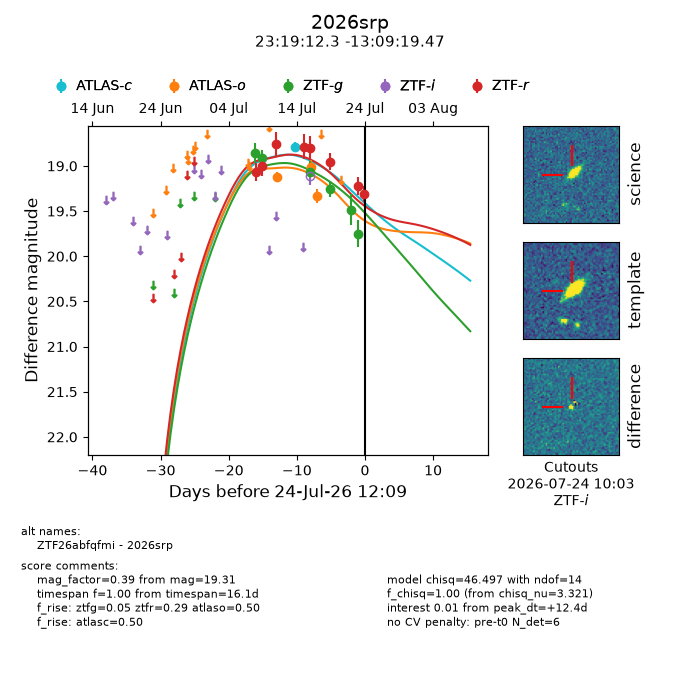
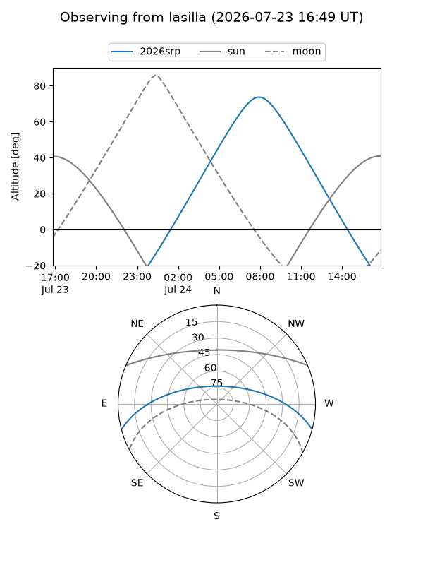
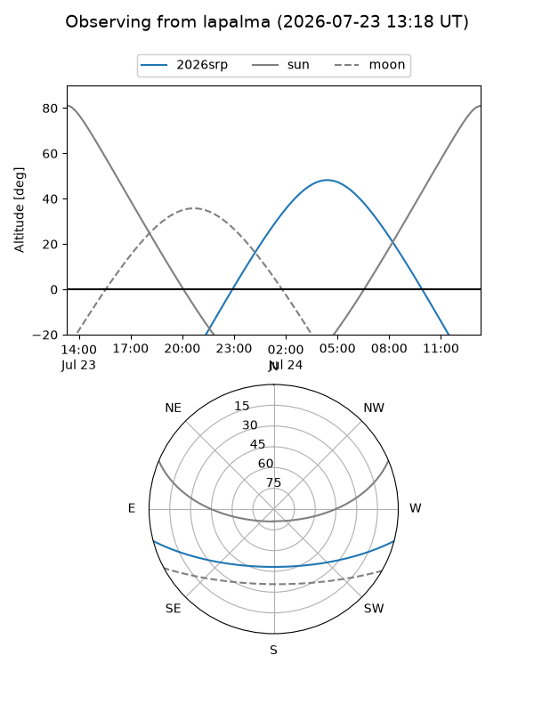
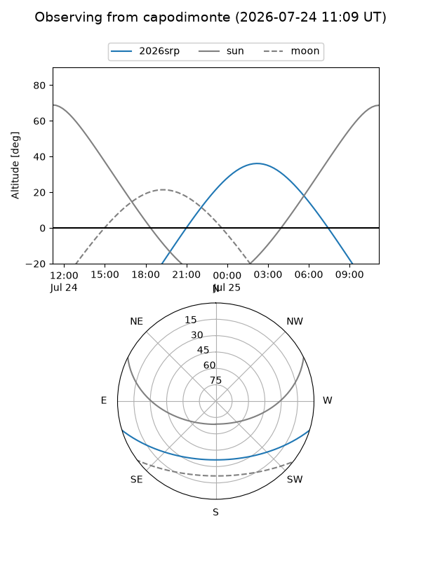
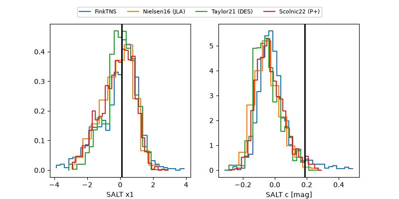

2026srp
Target 2026srp at 2026-07-24 12:11
Aliases and brokers:
FINK-ZTF: ztf.fink-portal.org/ZTF26abfqfmi
Lasair-ZTF: lasair-ztf.lsst.ac.uk/objects/ZTF26abfqfmi
ALeRCE-ZTF: alerce.online/object/ZTF26abfqfmi
YSE-PZ: ziggy.ucolick.org/yse/transient_detail/2026srp
TNS name: wis-tns.org/object/2026srp
Direct TNS query: direct search
alt names
ZTF26abfqfmi (ztf,fink_ztf)
2026srp (tns,yse)
Coordinates:
equatorial (ra, dec) = 349.8012,-13.15541
equatorial (HMS+DMS) = 23:19:12.30,-13:09:19.47
galactic (l, b) = (61.3055,-64.31263)
Flags:
TNS type: nan
peak dt: +12.4
Photometry:
last atlasc=18.79, atlaso=19.33, ztfg=19.75, ztfr=19.31
1 atlasc, 3 atlaso, 6 ztfg, 8 ztfr detections
Lightcurve

Visibility



Additional plots
